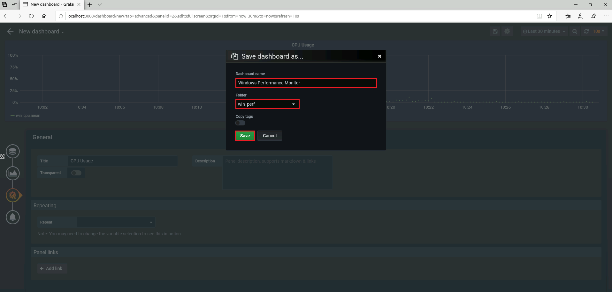

メトリクス監視環境構築手順
- JMeter を CUI で実行している際の JMeter のメトリクスを Grafana で可視化します。
- Windows Server のメトリクスを Grafana で可視化します。
概要
| ソフト | 内容 |
|---|---|
| InfluxDB | 時系列 DB です。メトリクスをここで収集します。 |
| Grafana | 様々なデータソースを可視化する GUI ツールです。 |
| Telegraf | 様々なメトリクスを InfluxDB に収集するコレクタです。 |
- JMeter のメトリクスを InfluxDB に流し，Grafana で可視化します。
- JMeter -> InfluxDB -> Grafana
- 対象の Windows に Telegraf をインストールし，Telegraf から Windows のメトリクスを InfluxDB に流し，Grafana で可視化します。
- Telegraf -> InfluxDB -> Grafana
Telegraf
パフォーマンスを見たい Windows にインストールします。
インストール
https://portal.influxdata.com/downloads から Windows 用の Telegraf をダウンロードします。
今回は https://dl.influxdata.com/telegraf/releases/telegraf-1.14.2_windows_amd64.zip をダウンロードしました。
これを任意のディレクトリに C:\Program Files\telegraf 解凍しました。
中身はシンプルで設定ファイルと実行ファイルのみです。
> tree /F .
C:\PROGRAM FILES\TELEGRAF
telegraf.conf
telegraf.exe
telegraf.conf
設定ファイルは InfluxDB の接続先とDB名を設定します。
[[outputs.influxdb]]
urls = ["http://xxx.xxx.xxx.xxx:8086"]
database = "win_perf"
起動
> cd C:\"Program Files"\telegraf
> .\telegraf.exe --config .\telegraf.conf
サービス化
> C:\"Program Files"\telegraf\telegraf.exe --service install
サービス起動／停止
> net start telegraf
> net stop telegraf
Docker コンテナ作成
ディレクトリ
- ローカルに InfluxDB, Grafana のデータを保持出来るようにディレクトリを用意します。
- 今回は C:\docker にディレクトリを作成します。
- 上記ディレクトリに grafana，influxdb のディレクトリを用意します。
- influxdb に data，etc のディレクトリを用意します。
> tree
C:\docker
├─grafana
└─influxdb
├─data
└─etc
influxdb.conf
- Graphite フォーマットでデータを受信させるため，Graphite のプラグインを有効にします。
- C:\docker\influxdb\etc に influxdb.conf を作成します。
- 文字コード：UTF-8
- 改行コード：LF
[meta]
dir = "/var/lib/influxdb/meta"
[data]
dir = "/var/lib/influxdb/data"
engine = "tsm1"
wal-dir = "/var/lib/influxdb/wal"
# Configure the graphite api
[input_plugins.graphite]
enabled = true
address = "0.0.0.0" # If not set, is actually set to bind-address.
port = 2003
database = "jmeter" # store graphite data in this database
docker-compose.yml
- influxdb, grafana のコンテナを作成します。
- C:\docker に docker-compose.yml を作成します。
- 文字コード：UTF-8
- 改行コード：任意
> tree
C:\docker
├─grafana
├─influxdb
│ ├─data
│ └─etc
│ └─influxdb.conf
└─docker-compose.yml
version: "3"
services:
influxdb:
image: influxdb:latest
ports:
- "8086:8086"
volumes:
- ./influxdb/data:/var/lib/influxdb
- ./influxdb/etc:/etc/influxdb
grafana:
image: grafana/grafana:latest
ports:
- "3000:3000"
volumes:
- ./grafana:/var/lib/grafana/
depends_on:
- influxdb
コンテナ作成
> pwd
C:\docker
> docker-compose up -d
> docker-compose ps
Name Command State Ports
----------------------------------------------------------------------------------------
load_test_grafana_1 /run.sh Up 0.0.0.0:3000->3000/tcp
load_test_influxdb_1 /entrypoint.sh influxd Up 0.0.0.0:8086->8086/tcp
コンテナ停止
> pwd
C:\docker
> docker-compose stop
コンテナ開始
> pwd
C:\docker
> docker-compose start
InfluxDB
動作確認
> wsl curl -sl -I http://localhost:8086/ping
HTTP/1.1 204 No Content
Content-Type: application/json
Request-Id: 47b37236-8a8b-11ea-8001-0242ac120002
X-Influxdb-Build: OSS
X-Influxdb-Version: 1.8.0
X-Request-Id: 47b37236-8a8b-11ea-8001-0242ac120002
Date: Thu, 30 Apr 2020 02:35:39 GMT
DB 作成
- JMeter のメトリクスを格納する DB を作成します。
> wsl curl -i -XPOST http://localhost:8086/query --data-urlencode "q=CREATE DATABASE jmeter"
HTTP/1.1 200 OK
Content-Type: application/json
Request-Id: e57671ad-8a95-11ea-8002-0242ac120002
X-Influxdb-Build: OSS
X-Influxdb-Version: 1.8.0
X-Request-Id: e57671ad-8a95-11ea-8002-0242ac120002
Date: Thu, 30 Apr 2020 03:51:39 GMT
Transfer-Encoding: chunked
{"results":[{"statement_id":0}]}
- Windows のメトリクスを格納する DB を作成します。
> wsl curl -i -XPOST http://localhost:8086/query --data-urlencode "q=CREATE DATABASE win_perf"
HTTP/1.1 200 OK
Content-Type: application/json
Request-Id: 4e59158c-957c-11ea-8002-0242ac130003
X-Influxdb-Build: OSS
X-Influxdb-Version: 1.8.0
X-Request-Id: 4e59158c-957c-11ea-8002-0242ac130003
Date: Thu, 14 May 2020 00:46:11 GMT
Transfer-Encoding: chunked
{"results":[{"statement_id":0}]}
Grafana
- https://grafana.com/docs/grafana/latest/installation/migrating_to2/ より cofnig.js は廃止されました。
管理者作成
- http://localhost:3000/login にアクセスします。
- 下記のように入力し [Login] をクリックします。
userid password admin admin
サーバメトリクス取得設定
data source 追加
[Configuration] / [DataSource] を選択します。
[Add data source] をクリックします。
[InfluxDB] を選択します。
下記設定し [Save & Test] をクリックします。
| 項目 | 設定 |
|---|---|
| Name | InfluxDB_WinPerf |
| URL | http://127.0.0.1:8086 |
| Access | Browser |
| Database | win_perf |
| User | admin |
| Password | admin |
| HTTP Method | GET |
フォルダ作成
[+] / [Create] / [Folder] を選択します。
[Name] に win_perf を入力し [Create] をクリックします。
Dashboard 作成
[+] / [Create] / [Dashboard] を選択します。
[Add Query] をクリックします。
[Query] で InfluxDB_WinPerf を選択します。
[FROM] で win_cpu を選択します。
[FROM] の [WHERE] に host = 見たいホスト名，instance = _Total を設定します。
[SELECT] の field に Percent_Processor_Time を設定します。
[Visualization] の [Axes] を設定します。
- Left Y
- Unit : percent(0-100)
- Y-Max : 100
[General] の [Title] を CPU Usage とします。
[Save dashboard] で下記設定し [Save] をクリックします。
- Dashboard name : Windows Performance Monitor
- Folder : win_perf

CPU 使用率のグラフが完成しました。

JMeter メトリクス取得設定
data source 追加
[Configuration] [DataSource] を選択し，[Add data source] をクリックします。
InfluxDB を選択します。
下記設定し [Save & Test] をクリックします。
| 項目 | 設定 |
|---|---|
| Name | InfluxDB_JMeter |
| URL | http://127.0.0.1:8086 |
| Access | Browser |
| Database | jmeter |
| User | admin |
| Password | admin |
| HTTP Method | GET |
Dashboard 追加
[+] / [Import] を選択します。
Grafana.com Dashboard に 5496 を入力し，Load をクリックします。
以下項目を設定し Import をクリックします。
| 項目 | 設定 |
|---|---|
| DB name | InfluxDB_JMeter |
| Measurement name | jmeter |
JMeter シナリオ編集
Backend Listener 追加
JMeter シナリオに Backend Listener を追加します。
- テスト計画を右クリックし，追加\リスナー\Backend Listener を選択します。
- Backend Listener implemantation で org.apache.jmeter.visualizers.backend.influxdb.influxdbBackendListenerClient を選択します。
項目 設定 influxdbUrl http://127.0.0.1:8086/write?db=jmeter summaryOnly false application 任意 measurement jmeter